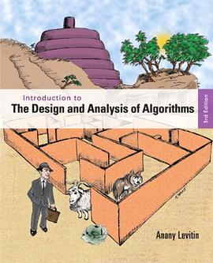

Introduction to the Design and Analysis of Algorithms
我的算法知识太散了 =。= 什么都知道一点什么都，而且越发感觉吃考研复习时的老本了，有空的话还是多读读《算导》好了，这书说的也挺好，但是看英文版的感觉不是那么清晰 _(:з」∠)_
作品信息
| 作者 | Anany Levitin |
| 出版社 | Addison Wesley |
| 出版年 | 2011-10-10 |
| ISBN | 9780132316811 |
| 页数 | 592 |
| 装帧 | Paperback |
| 定价 | USD 117.00 |
说过什么
2016-10-10 19:32:47
广播 · 在读 · ★★★★☆
我的算法知识太散了 =。= 什么都知道一点什么都，而且越发感觉吃考研复习时的老本了，有空的话还是多读读《算导》好了，这书说的也挺好，但是看英文版的感觉不是那么清晰 _(:з」∠)_
最后一次看到是 2026-08-01T11:00:51+10:00 · 豆瓣原页